🎫 Billet d'entrée — trois réflexes, sans note (~5 min)
🎒 Je révise en 3 minutes
Une innovation de rupture ne se reconnaît pas à sa date mais à son effet : elle ouvre un usage impossible auparavant, et le métier d'avant ne suffit plus. Une simple amélioration, elle, fait mieux la même chose.
Comparer deux nombres suppose trois accords : même unité, même période, même périmètre. Il en manque un, et la comparaison ne veut plus rien dire — même si le tableur, lui, accepte le calcul.
Un argumentaire court n'est pas un avis : c'est une chaîne de faits vérifiables, et il gagne à dire lui-même ce qu'il ne prend pas en compte.
🗼 Activité 1 — Ce qui a changé, et ce qui a rompu (~50 min)
Surveiller les feux de végétation ne s'est pas fait de la même façon selon les époques. On appelle régime de surveillance une façon de surveiller : qui regarde, avec quoi, et ce que cela permet de voir. Trois régimes se sont succédé :
- Régime 1 — la vigie humaine : une personne dans une tour de guet, avec ses yeux et des jumelles.
- Régime 2 — l'observation satellitaire : un satellite photographie la région depuis l'espace, de jour comme de nuit.
- Régime 3 — la détection multi-indices : des capteurs (chaleur, fumée, gaz) qui se confirment entre eux avant de donner l'alerte.
Garde ces trois noms sous les yeux : la production c) te les redemande.
a) Améliorer, ou rompre
b) De la découverte à l'usage
Le drone qui repère un point chaud sous la fumée doit tout à un rayonnement invisible. En 1800, l'astronome William Herschel décompose la lumière du Soleil avec un prisme et place un thermomètre sous chaque couleur, pour savoir laquelle chauffe le plus. Le thermomètre placé juste au-delà du rouge, là où l'œil ne voit plus rien, monte davantage que tous les autres.
![Schéma de l'expérience de Herschel en 1800, vu de côté. La lumière du Soleil passe par la fente d'un volet, traverse un prisme et s'étale en éventail sur une table, où elle dessine six bandes : violet, bleu, vert, jaune, orange, rouge. Juste à droite du rouge, une septième zone, encadrée en pointillés, reste sombre : l'œil n'y voit aucune couleur. Sept thermomètres sont debout sur la table, un dans chaque couleur et un de plus au-delà du rouge. Leurs colonnes, dessinées à des hauteurs schématiques sans chiffres, montent de plus en plus du violet au rouge, et la plus haute est celle du thermomètre placé dans la zone sombre. Le schéma ne dit ni ce que Herschel cherchait, ni ce qu'il en a conclu.](Images/herschel_au_dela_du_rouge.svg)
c) Ta production
🪜 Version étayée — des phrases à compléter
- « 1. La vigie humaine permet ____. Le métier est celui de ____. »
- « 2. Le satellite permet ____, ce qui était impossible avant. Le métier devient ____. »
- « 3. Le multi-indices permet ____. Le métier devient ____. »
- « 4. La rupture est ____, parce qu'elle n'est pas ____ en mieux : elle ____. »
💡 Aide de niveau 1
Pour chaque régime, pose-toi deux questions : qu'est-ce qu'on peut faire qu'on ne pouvait pas ? et qui sait le faire ? Si la deuxième réponse change, tu tiens une rupture.
🪄 Aide de niveau 2
Un guetteur sait regarder longtemps. Un analyste sait lire une donnée. Un concepteur sait faire tenir un système. Trois savoir-faire sans rapport : c'est le signe que quelque chose a rompu, deux fois.
d) Trois métiers, une même question
Quand une machine sait faire un travail, la même question revient toujours : ce métier va-t-il disparaître ? Voici trois métiers où elle s'est posée. Ils donnent trois réponses différentes.
- 🚚 Le camion. Des entreprises mettent au point des camions capables de rouler sans conducteur. Ici, la machine remplace réellement le conducteur. Mais sur les routes, ces camions arrivent plus lentement que ce qui avait été annoncé.
- ✈️ L'avion. Un avion de ligne vole aujourd'hui avec au moins deux pilotes. Un projet européen a étudié l'eMCO (extended Minimum Crew Operations) : deux pilotes au décollage et à l'atterrissage, un seul pendant la croisière. L'Agence européenne de la sécurité aérienne (EASA) a freiné : avec les cockpits actuels, on n'a pas pu démontrer que ce vol serait aussi sûr qu'avec deux pilotes.
- 🌾 La canne, en Martinique. La canne à sucre a longtemps été coupée à la main. Aujourd'hui, environ trois quarts de la canne martiniquaise sont récoltés par des machines ; quelques champs sont encore coupés à la main, surtout chez les petits planteurs. La filière manque aujourd'hui de coupeurs de canne : pour continuer à récolter, des petits planteurs se tournent vers des machines plus petites. La machine n'arrive pas seulement parce qu'elle sait faire : elle arrive aussi parce que les bras manquent.
🪜 Version étayée — des phrases à compléter
- « Camion : ____ — décide : ____. »
- « Avion : ____ — décide : ____. »
- « Canne : ____ — décide : ____. »
💡 Aide de niveau 1
Pour chaque métier, pose deux questions séparées : la machine sait-elle faire le travail ? et quelqu'un a-t-il décidé de la laisser le faire ? Les deux réponses ne sont pas forcément les mêmes.
🪄 Aide de niveau 2
Trois réponses différentes : un remplacement en cours, plus lent que prévu ; un remplacement étudié mais freiné ; un remplacement déjà fait, en grande partie, et poussé par le manque de coupeurs. Pour « qui décide », cherche des acteurs : des entreprises, une autorité de sécurité, des planteurs.
✅ Correction — les trois régimes, les deux ruptures, et les trois métiers
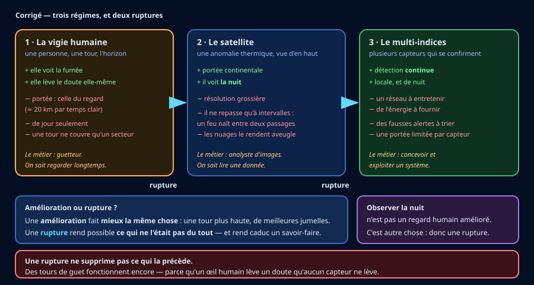
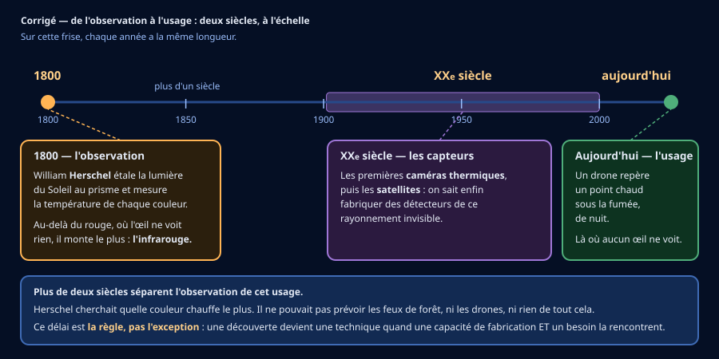
Une amélioration fait mieux la même chose. Une rupture rend possible ce qui ne l'était pas — et rend caduc un savoir-faire. Observer la nuit n'est pas un regard humain amélioré.
Le piège : croire qu'une rupture supprime ce qui la précède. Des tours de guet fonctionnent encore, parce qu'un œil humain lève un doute qu'aucun capteur ne lève.
d) Trois métiers, trois réponses.
Le camion : la machine remplace réellement le conducteur, mais les mises en service avancent plus lentement que les annonces. Décident les entreprises qui les développent, et les règles de circulation, qui disent où ils ont le droit de rouler.
L'avion : la technique permet d'étudier un vol à un seul pilote en croisière. Mais une autorité, l'EASA, n'a pas pu conclure qu'il serait aussi sûr, et elle freine. Possible techniquement et autorisé sont deux choses différentes : la seconde se décide.
La canne : le remplacement a déjà eu lieu, en grande partie. Ce sont les exploitants qui ont choisi la machine, selon la taille de leurs parcelles et leurs moyens — et le métier n'a pas disparu partout : quelques champs sont encore coupés à la main. Mais ce choix n'est pas tout à fait libre : la filière manque de coupeurs, et des petits planteurs se tournent vers des machines plus petites pour continuer à récolter. Ici, « qui décide » n'a plus une seule réponse : les exploitants choisissent, et le manque de bras pèse sur leur choix.
Quatre mécanismes, pas un. Une machine peut remplacer un travail parce qu'elle sait le faire (le camion) ; elle peut être arrêtée par une autorité (l'avion) ; elle peut être choisie par ceux qui l'achètent (la canne) ; elle peut aussi arriver parce que personne ne fait plus le travail (la canne encore).
Qu'est-ce qui disparaît, qu'est-ce qui subsiste, qui en décide : trois questions distinctes. La technique rend un remplacement possible ; elle ne le décide pas seule — et la décision n'a pas toujours un seul auteur.
Le piège : tirer d'un seul cas une règle pour tous les métiers. Le camion, l'avion et la canne répondent chacun autrement à la même question.
🧰 Avant de commencer (échauffement) — les quatre gestes du tableur
Quatre gestes à faire une fois, au début, et ta séance ne se perdra pas. Tu les as peut-être déjà faits une autre année : refais-les, c'est court. Et si tu ne les as jamais faits, tout est écrit ici — tu n'as besoin de rien d'autre.
- Ouvrir. Ouvre le tableur (LibreOffice Calc), puis ouvre le fichier 📥
donnees_impacts_feux_activites_conflit_3e.csv(clique ici pour le télécharger) (Fichier → Ouvrir…). Dans la fenêtre d'import, garde Point-virgule coché comme séparateur et valide.![Boîte de dialogue « Import de texte » de LibreOffice Calc, en français et en mode sombre, pour le fichier donnees_impacts_feux_activites_conflit_3e.csv. En haut : Jeu de caractères « - Automatique - » avec la mention Europe occidentale (ISO-8859-1) en dessous, Locale « Par défaut - Français (France) », À partir de la ligne 1. Dans « Options de séparateur », le bouton « Séparé par » est sélectionné ; parmi les cases Tabulation, Virgule, Point-virgule, Espace et Autre, seule Point-virgule est cochée. En bas, l'aperçu montre les données réparties en colonnes : categorie, date, territoire, indicateur, valeur, unite, et l'on y lit les valeurs 0,142, 0,00293, 0,167 et 4,97, écrites avec une virgule. Les boutons OK et Annuler sont en bas à droite.](Images/geste_tableur_1_ouvrir_import_csv.png)
Ce que tu dois voir : dans « Options de séparateur », la case Point-virgule cochée, et l'aperçu du bas déjà découpé en colonnes. Si c'est « Détecté (;) » qui est sélectionné, c'est bon aussi : le (;) dit que le point-virgule a été reconnu. Puis : clique OK. 
Comment savoir que c'est fait : chaque donnée est dans sa propre colonne, avec les titres sur la ligne 1. Regarde la colonne valeur : les nombres sont collés à droite de leur cellule, jusqu'à 0,00293. C'est la preuve que le tableur les a compris comme des nombres, et non comme du texte — sans quoi aucun tri, aucune moyenne, aucun graphique ne serait possible. 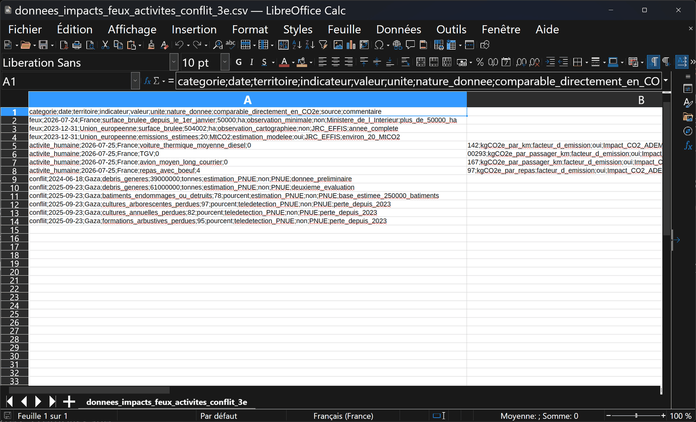
Si tu vois ceci : la plupart des lignes sont collées dans la colonne A, points-virgules compris — et quatre lignes seulement sont coupées en deux, juste à l'endroit de leur virgule décimale : 0 d'un côté, 142 de l'autre. Le séparateur choisi n'était pas le bon. Ferme le fichier sans l'enregistrer (Fichier → Fermer), recommence Fichier → Ouvrir… et coche Point-virgule. - Nommer. Fichier → Enregistrer sous… tout de suite, au format Classeur ODF (.ods), sous
3E-FEUX-TON NOM, dans Documents, dans le dossier qui porte le nom de ta classe (par exemple3E1). Si ce dossier n'existe pas encore, crée-le d'abord : dans la fenêtre d'enregistrement, ouvre Documents, clique sur Nouveau dossier, tape le nom de ta classe, valide, puis entre dedans.
Ce que tu dois voir : le chemin, tout en haut, finit par Documents. Si la fenêtre s'ouvre ailleurs — Téléchargements, par exemple — clique sur Documents dans la colonne de gauche. Seul le haut de la fenêtre est montré ici : en dessous, tu verras la liste de tes propres dossiers. Cherche dedans celui qui porte le nom de ta classe : s'il y est, entre dedans (double-clic) et passe aux trois dernières images ; s'il n'y est pas, continue ci-dessous. 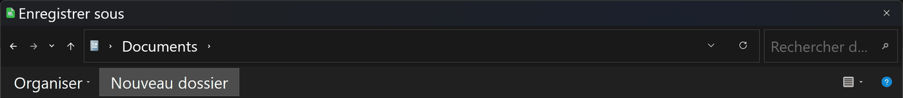
Le bouton Nouveau dossier : il est écrit en toutes lettres, dans la barre au-dessus de la liste des fichiers, juste à droite d'Organiser. Clique dessus. 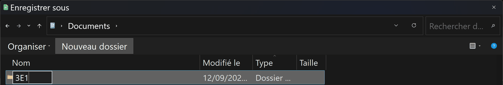
Ce que tu dois voir : une ligne apparaît dans la liste, avec une case où écrire à la place du nom. Tape le nom de ta classe, puis Entrée. 3E1 est un exemple : mets le nom de ta classe. Ici, la liste a été raccourcie à cette seule ligne ; chez toi, tes autres dossiers restent visibles autour. 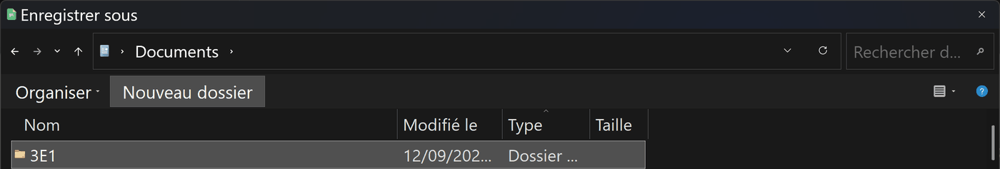
Comment savoir que c'est fait : la case où tu écrivais a disparu, et ton dossier porte son nom, avec la mention Dossier dans la colonne Type. Windows n'entre pas dedans tout seul : double-clique sur son nom pour y entrer. 3E1 est un exemple. 
Ce que tu dois voir avant d'enregistrer : trois choses. Le chemin, en haut, finit par Documents puis le nom de ta classe ; le Nom du fichier suit la consigne ; Type : Classeur ODF (*.ods) — si tu lis encore « Texte CSV », ouvre la liste et choisis Classeur ODF. Puis : Enregistrer. DUPONT et 3E1 sont des exemples : mets ton nom et ta classe. 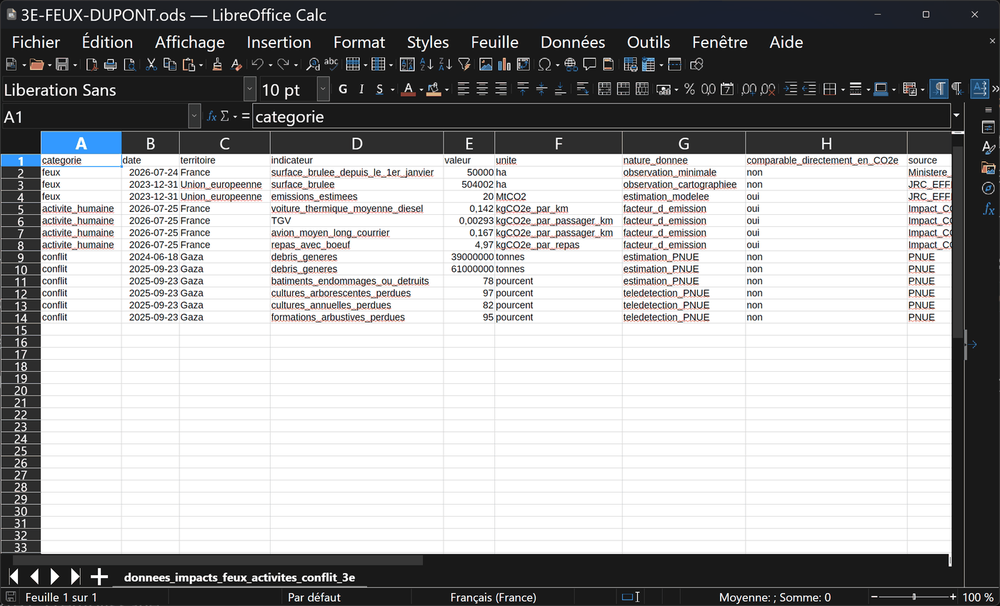
Comment savoir que c'est fait : la barre de titre, tout en haut, affiche ton nom de fichier suivi de .ods, et non plus .csv. L'onglet du bas, lui, garde le nom de la feuille : c'est normal. DUPONT est un exemple. 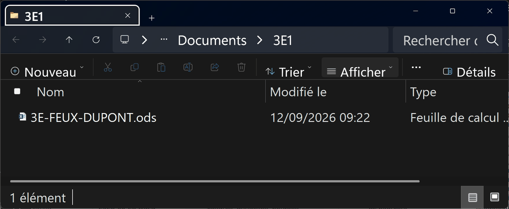
Pour vérifier, ou pour le retrouver plus tard : ouvre l'Explorateur de fichiers de Windows, va dans Documents, puis dans le dossier de ta classe : ton fichier .ods est là. Ce chemin — Documents, puis ta classe — est celui à refaire à la séance suivante. 3E1 et DUPONT sont des exemples. - Retrouver. Le tableur n'enregistre pas tout seul : Ctrl+S après chaque série de saisies. Rouvre ton fichier au début de la séance suivante pour vérifier qu'il est complet.

Ce que tu dois voir avant Ctrl+S : tu as tapé quelque chose (ici « accord_manquant » en K1, la colonne que l'activité 2 te fait ajouter pour écrire lequel des trois accords manque), et en bas à gauche de la fenêtre, la petite icône de la barre d'état est rouge : ce qui est à l'écran n'est pas encore sur le disque. Le raccourci n'ouvre aucune fenêtre : c'est cette icône qui te répond. 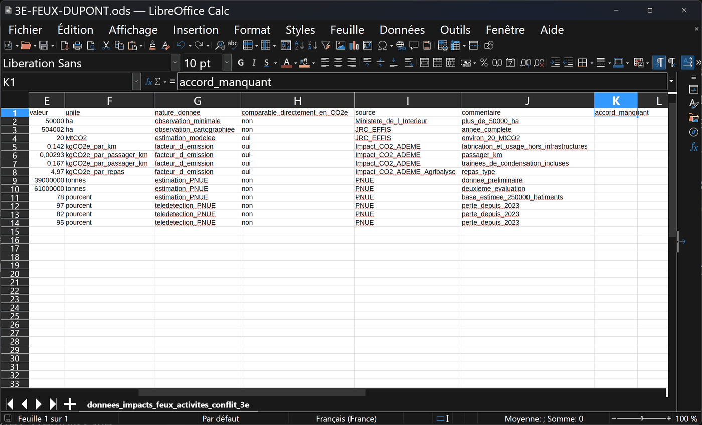
Comment savoir que c'est fait : après Ctrl+S, l'icône en bas à gauche redevient grise. Rien d'autre ne change à l'écran : c'est normal. 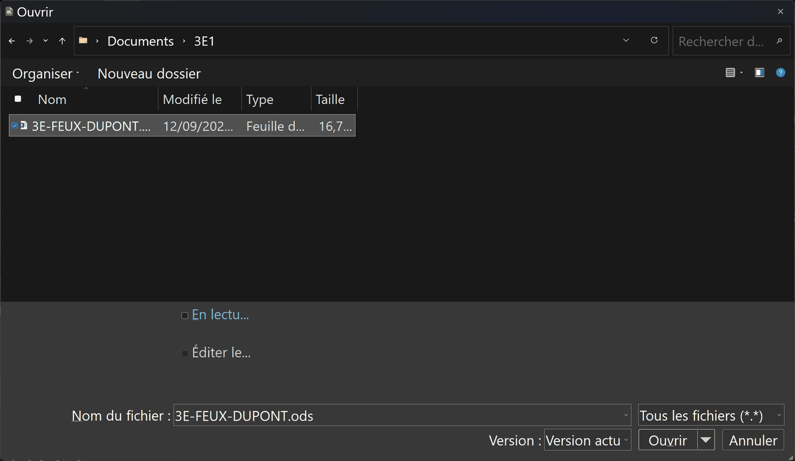
Pour rouvrir à la séance suivante : Fichier → Ouvrir…, va dans Documents, puis dans le dossier de ta classe, et choisis le fichier qui finit par .ods — pas le .csv, qui est le fichier de départ, sans ton travail. Le nom complet s'écrit en bas, dans Nom du fichier : c'est là qu'on vérifie. Le nom et le dossier sont des exemples. - Sortir. Le classeur est le rendu. Un graphique se copie dans le compte rendu, ou s'exporte en image par un clic droit.
![Fenêtre de LibreOffice Calc en mode sombre avec un diagramme en colonnes posé sur la feuille et sélectionné : de petites poignées carrées l'entourent. Un menu contextuel est ouvert par-dessus : Couper, Copier, Coller, Position et taille, Ancre, Positionner, Nom, Texte alternatif, Assigner la macro, Exporter comme image, Éditer. Le diagramme compare quatre pertes en pourcentage, nommées sous l'axe : batiments_endommages_ou_detruits, cultures_arborescentes_perdues, cultures_annuelles_perdues et formations_arbustives_perdues. Derrière, on lit le tableau complet des treize indicateurs.](Images/geste_tableur_4_sortir_clic_droit_graphique.png)
Ce que tu dois voir : un clic sur le graphique (des petites poignées carrées apparaissent autour), puis un clic droit : le menu propose Copier (pour le coller dans le compte rendu) et Exporter comme image. Le graphique montré est un exemple, et il n'est pas choisi au hasard : ces quatre lignes-là sont les seules du fichier à partager la même unité, la même date et le même territoire. C'est à cette condition qu'un graphique a un sens. 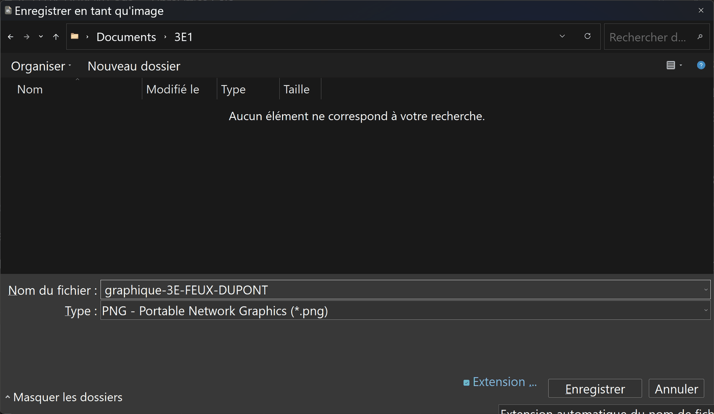
Comment savoir que c'est fait : après Exporter comme image, cette boîte s'ouvre ; garde le type PNG, donne un nom, vérifie que le chemin finit par le nom de ta classe, Enregistrer. Le fichier image apparaît dans ton dossier, à côté du classeur. Le nom et le dossier sont des exemples.
📊 Activité 2 — Ce que les données permettent d'affirmer (~50 min)
Ouvre le fichier dans un tableur. Il rassemble des indicateurs de trois catégories : des feux, des activités humaines, et un conflit. Avant de calculer quoi que ce soit, il faut savoir ce qui est comparable à quoi.
📊 Mode opératoire — LibreOffice Calc
- Ouvrir : clic droit sur le fichier → Ouvrir avec LibreOffice Calc → séparateur point-virgule.
- Insérer une colonne : clic droit sur l'en-tête d'une colonne → Insérer des colonnes avant.
- Filtrer : Données → AutoFiltre, puis choisir dans la liste de l'en-tête.
📊 Mode opératoire — Excel
- Ouvrir : Données → À partir d'un fichier texte/CSV → séparateur point-virgule.
- Insérer une colonne : clic droit sur l'en-tête → Insertion.
- Filtrer : Données → Filtrer, puis choisir dans la liste de l'en-tête.
a) Les trois accords
b) Ta matrice
🪜 Version étayée — des phrases à compléter
- « ____ (indicateur) : ____ (oui / non / à vérifier), parce qu'il manque ____. »
- « ____ : ____, parce que l'unité est ____ et non des kgCO₂e. »
- « ____ : ____, parce que la période est ____ et non ____. »
- « ____ : ____, parce que le périmètre est ____ et non ____. »
💡 Aide de niveau 1
Regarde d'abord la colonne unite. Si deux lignes n'ont pas la même, la
réponse est déjà « non » — sauf si une conversion existe.
✅ Correction — la matrice attendue
Une surface en hectares n'est pas comparable directement à une émission en MtCO₂, ni à une masse de débris, ni à un pourcentage de végétation perdue : l'unité diffère à chaque fois, et la grandeur mesurée aussi.
Les facteurs en kgCO₂e — par kilomètre, par passager-kilomètre, par repas — servent à calculer des équivalences, mais uniquement après conversion d'une quantité totale en kgCO₂e. Ce sont des taux, pas des quantités.
Les indicateurs du conflit décrivent d'autres dimensions environnementales : débris, bâtiments, cultures, eau. Les convertir arbitrairement en CO₂e serait scientifiquement injustifié — on verra pourquoi en séance 4.
Trois accords sont nécessaires : même unité, même période, même périmètre. Il en manque un, la comparaison tombe.
Le piège : le tableur accepte n'importe quelle opération. Il ne sait pas ce que les nombres veulent dire ; c'est à toi de le savoir avant de cliquer.
🧮 Activité 3 — Un proxy, et sa critique (~50 min)
Le JRC/EFFIS — le service de la Commission européenne qui cartographie les feux — indique qu'en 2023, environ 504 002 ha ont brûlé dans l'Union européenne, et que ces feux ont produit une estimation d'environ 20 Mt de CO₂. Le ministère de l'Intérieur annonçait, au 24 juillet 2026, plus de 50 000 ha brûlés en France depuis le début de l'année.
Ta production
🪜 Version étayée — des phrases à compléter
- « Ratio : ____ ÷ ____ ≈ ____ tCO₂/ha. »
- « Estimation : 50 000 × ____ ≈ ____ tCO₂, soit environ ____ Mt. »
- « Équivalence : cela correspond à environ ____ ____. »
- « Avertissement : estimation par ____ européen ____, non officielle pour ____. »
💡 Aide de niveau 1
Pour l'équivalence, divise l'estimation en kgCO₂e par le facteur choisi. Attention aux unités : 1,98 Mt = 1 984 000 000 kg.
✅ Correction — le proxy, et ce qu'il faut en dire
Ratio : 20 000 000 ÷ 504 002 ≈ 39,68 tCO₂/ha. Estimation : 50 000 × 39,68 ≈ 1,984 MtCO₂.
Équivalences — environ 14,0 milliards de km en voiture thermique ; 677 milliards de passager-km en TGV ; 11,9 milliards de passager-km en avion moyen-long courrier ; 399 millions de repas avec du bœuf.
Avertissement : « estimation par proxy européen 2023, non officielle pour la France 2026 ». Le ratio moyen masque la végétation, l'humidité, l'intensité du feu, la biomasse consumée, les émissions autres que le CO₂ et la récupération future des écosystèmes.
Un proxy est légitime. Un proxy tu ne l'est plus : un chiffre voyage toujours seul, détaché de la page qui l'expliquait.
Le piège : retirer l'avertissement au moment de faire un beau graphique. C'est exactement là qu'il devient indispensable.
⚖️ Activité 4 — Ce qui ne se convertit pas (~45 min)
Avant de commencer — phrase obligatoire, à lire et à garder présente pendant toute l'activité :
« Nous comparons des indicateurs et des méthodes de mesure ; nous ne comparons ni la valeur des vies, ni la gravité des souffrances, ni la légitimité des victimes. »
Le Programme des Nations unies pour l'environnement (PNUE) a publié des évaluations
environnementales sur Gaza. Elles décrivent notamment l'augmentation des débris, les
dommages aux bâtiments, les pertes de végétation, et des risques pour l'eau,
les sols et la santé. Ces lignes figurent dans ton fichier, catégorie
conflit.
Ta production
🪜 Version étayée — des phrases à compléter
- « Raison 1 : les bâtiments n'ont pas tous ____. »
- « Raison 2 : les niveaux de ____ ne sont pas identiques. »
- « Raison 3 : les estimations reposent en partie sur ____. »
- « Un seul chiffre ne suffit pas parce que ____ et ____ ne se mesurent pas dans la même ____ : aucune formule ne les ramène l'une à l'autre. »
✅ Correction — trois zones, et une frontière
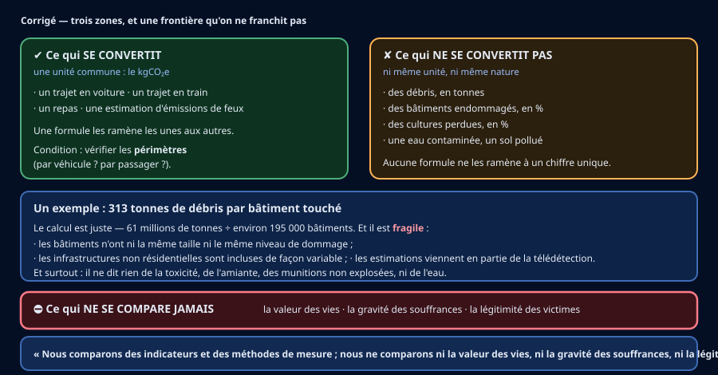
Les calculs. 61 − 39 = 22 millions de tonnes, soit 22 ÷ 39 ≈ 56,4 % d'augmentation. 78 % de 250 000 ≈ 195 000 bâtiments. 61 000 000 ÷ 195 000 ≈ 313 tonnes par bâtiment touché.
Pourquoi cette moyenne est fragile : les bâtiments ont des tailles différentes ; les niveaux de dommage ne sont pas identiques ; la masse des infrastructures non résidentielles est incluse de manière variable ; et les estimations reposent en partie sur la télédétection. Surtout, elle ne décrit ni la toxicité, ni l'amiante, ni les munitions non explosées, ni la contamination de l'eau.
Certaines grandeurs ne se convertissent pas les unes dans les autres. Des débris, des cultures détruites et une eau contaminée ne se remplacent par aucun chiffre unique — ni carbone, ni autre.
Et la frontière qu'on ne franchit pas : « Nous comparons des indicateurs et des méthodes de mesure ; nous ne comparons ni la valeur des vies, ni la gravité des souffrances, ni la légitimité des victimes. »
🌍 Transfert — les métiers d'ici (~10 min)
🪜 Version étayée — des phrases à compléter
- « Le métier de ____ a déjà changé : aujourd'hui, ____ est fait par ____. Qui l'a décidé : ____. »
- « Le métier de ____ pourrait changer, parce que ____. Mais ____ reste nécessaire. Qui décidera : ____. »
- « Le métier de ____ ____. Qui décide : ____. »
💡 Aide de niveau 1
Pars des métiers que tu vois autour de toi : au champ, au port, au magasin, sur la route, à l'aéroport. Pour chacun : une machine fait-elle déjà une partie du travail ? Sinon, pourrait-elle le faire ?
💡💡 Aide de niveau 2
Pour « qui décide », il y a presque toujours plusieurs réponses : l'entreprise ou l'exploitant qui achète la machine ; une autorité qui autorise ou interdit, au nom de la sécurité ou des données ; les clients ou les habitants, qui acceptent ou refusent. Et tu as déjà un métier d'ici sous la main : la canne, de l'activité 1.
📖 Correction complète
Il n'y a pas de liste unique : la correction porte sur la façon de raisonner. Une réponse juste peut ressembler à ceci.
Déjà changé — la coupe de la canne. Environ trois quarts de la canne martiniquaise sont récoltés par des machines. Ce sont les exploitants qui ont choisi, selon leurs parcelles et leurs moyens — et le manque de coupeurs pèse sur ce choix : des petits planteurs se tournent vers des machines plus petites. Le métier n'a pas disparu : des champs sont encore coupés à la main, et une récolteuse a besoin de quelqu'un pour la conduire et l'entretenir.
Pourrait changer — le chauffeur de poids lourd. Des camions sans conducteur sont mis au point ailleurs, et ils arrivent plus lentement qu'annoncé. Sur les routes d'ici, rien n'est tranché : en décideront les entreprises de transport, et les règles de circulation — pas la machine.
Pourrait changer — le pilote de ligne qui atterrit en Martinique. L'eMCO (un seul pilote en croisière) a été étudié, et l'EASA freine. La décision appartient à une autorité de sécurité, pas au constructeur seul.
Ce que cette correction ne dit pas : si ces métiers disparaîtront. Personne ne peut te l'affirmer. Ce qu'on peut dire, c'est ce qui a déjà changé, ce qui est en discussion, et qui a la main.
🧠 À retenir : un métier ne disparaît pas du seul fait qu'une machine sait le faire. Entre le possible et ce qui arrive, il y a des décisions — et des gens qui les prennent.
✍️ Activité 5 — Deux argumentaires courts (~45 min)
Quatre familles de solutions sont envisagées pour aider les secours. Chacune a un usage, des limites, des données nécessaires et une forme de contrôle humain.
| Solution | Usage possible | Limites | Contrôle humain |
|---|---|---|---|
| Drone thermique | repérer un point chaud, cartographier | vent, fumée, autonomie, espace aérien | validation de l'alerte et du vol |
| Robot terrestre | explorer une zone dangereuse, mesurer | relief, obstacles, chaleur, communication | arrêt d'urgence et reprise manuelle |
| Réseau fixe de capteurs | surveiller en continu | maintenance, portée, fausses alertes | confirmation avant alerte majeure |
| Satellite | observer de vastes surfaces | résolution, revisite, nuages | interprétation par des spécialistes |
a) L'incidence de l'objet sur la société
🪜 Version étayée — la structure est donnée
- « Je retiens ____ et ____. »
- « Pour les secours, cela change ____, parce que ____ (fait ou chiffre). »
- « Pour les habitants, cela change ____. »
- « Un métier apparaît ou se transforme : ____. »
- « En revanche, cela crée aussi ____ (un inconvénient réel). »
- « Mon argumentaire ne prend pas en compte ____. »
b) L'incidence de la société sur l'objet
🪜 Version étayée — la structure est donnée
- « Contrainte 1 — règle ou norme : ____. Elle oblige à ____. »
- « Contrainte 2 — budget ou moyens publics : ____. Elle oblige à ____. »
- « Contrainte 3 — protection des données ou vie privée : ____. Elle oblige à ____. »
- « Ces contraintes ne sont pas des obstacles : elles ____. »
💡 Aide de niveau 1
Une caméra tournée vers la forêt filme aussi les chemins. Qui a le droit de regarder ces images, et pendant combien de temps ? Voilà une contrainte sociétale qui change la conception : résolution, durée de conservation, floutage.
🪄 Aide de niveau 2
Trois natures différentes, pour t'aider : une règle (espace aérien, protection des données), un moyen (budget d'une commune, personnel disponible pour l'entretien), une attente (les habitants veulent être prévenus, pas surveillés).
✅ Correction — deux sens, deux argumentaires
L'objet sur la société (C1.3). Un drone thermique et un réseau de capteurs réduisent l'exposition des pompiers, puisqu'une zone dangereuse est reconnue avant qu'on y entre. Ils réduisent aussi le délai entre le départ de feu et l'alerte — et l'on a vu en séance 3 l'ordre de grandeur de ce qui brûle : 50 000 ha en sept mois.
En contrepartie, ils créent des fausses alertes à trier, un réseau à entretenir, et des images qui n'auraient pas existé autrement.
Un métier se transforme : le guetteur devient exploitant de système.
Ce qui n'est pas pris en compte : le coût réel, la formation nécessaire, et ce qui se passe quand le réseau tombe.
La société sur l'objet (C1.4). La réglementation de l'espace aérien limite où et quand un drone peut voler : elle impose une autorisation et donc un délai, ce qui oblige à prévoir un mode dégradé.
La protection des données oblige à décider de la résolution des images, de leur durée de conservation et de qui peut les consulter : on conçoit alors un système qui détecte une chaleur sans identifier des personnes.
Le budget d'une commune impose une solution entretenable par les moyens locaux : cela élimine des matériels performants mais inréparables sur place. Ces contraintes ne sont pas des obstacles : elles font partie du cahier des charges, au même titre que la portée ou l'autonomie.
Les deux sens comptent. Un objet change la société ; la société change l'objet. Un argumentaire de 3e nomme les deux, et dit ce qu'il laisse de côté.
Le piège : écrire un argumentaire qui n'énumère que des bénéfices. Il ne prouve rien, parce qu'on pourrait l'écrire pour n'importe quelle solution.
🎁 Bonus (facultatif — hors parcours obligatoire)
- Adapter à la Martinique. Relief marqué, réseau inégal, saison cyclonique :
laquelle des quatre solutions tiendrait le mieux, et qu'est-ce qu'il faudrait changer ?
- Le scénario sans robot. Propose une situation où la meilleure réponse n'est
pas un système technique — et dis pourquoi.
- Seuil unique contre indices croisés. Compare une alerte déclenchée par un seul seuil
de température à une alerte confirmée par plusieurs indices, du point de vue des fausses
alertes ET des feux manqués.
✅ Correction du Bonus — à ouvrir après avoir cherché
1. La Martinique. Le relief casse les liaisons radio et masque des versants entiers aux satellites à faible angle ; la saison cyclonique interdit de compter sur un réseau fixe fragile. Un réseau de capteurs au sol, dense mais simple, complété par des drones ponctuels, tient mieux qu'une solution unique. Ce qu'il faut changer : des fixations qui résistent au vent, une autonomie qui survit à une coupure de plusieurs jours, et un mode de repli qui stocke localement quand la liaison tombe.
2. Sans robot. Le débroussaillement réglementaire autour des habitations, l'accès des engins de secours, et l'information des promeneurs les jours à risque évitent des départs de feu — là où un capteur ne fait que les constater. Détecter n'est pas prévenir : contre les départs liés à une imprudence, aucune technologie de détection n'agit sur la cause.
3. Seuil contre indices. Un seuil unique produit beaucoup de fausses alertes (le soleil sur du bitume dépasse le seuil) et, si on le relève pour les réduire, il produit des feux manqués. On ne fait que déplacer l'erreur le long d'un curseur. Croiser deux indices indépendants — chaleur ET particules — déplace le problème ailleurs : la rencontre fortuite des deux est rare, donc les deux erreurs baissent ensemble. Le prix à payer : deux capteurs à entretenir au lieu d'un, et une logique de confirmation à écrire.
🏁 Bilan (~10 min)
🧠 Comment j'ai travaillé
📍 Je me positionne
🧠 Prêt·e à t'entraîner ?
Le QCM de la séquence compte 30 questions, dont 11 illustrées — les trois corrigés du dossier y reviennent, chacun sous plusieurs angles, et chaque réponse fausse y est expliquée. Elles se répartissent sur les quatre codes :
- 3e_C1.1 — les innovations de rupture (8 questions)
- 3e_C1.2 — de la découverte scientifique à ses effets (7 questions)
- 3e_C1.3 — l'incidence d'un OST sur la société (8 questions)
- 3e_C1.4 — l'incidence des contraintes sociétales sur les OST (7 questions)